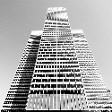
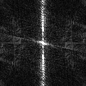
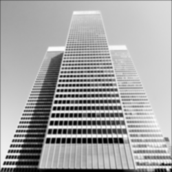
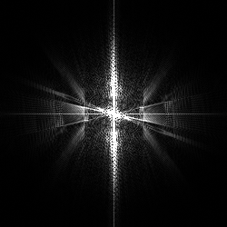
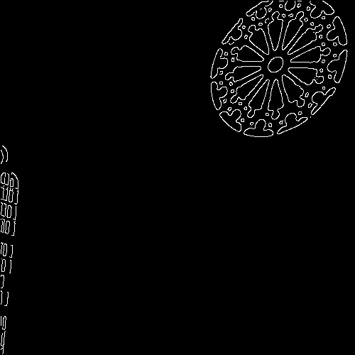

Name: Daniel Todd
Student No: 301428609
Date: September 28th, 2022
I have not cheated in any way when doing this assignment, I did it on my own. I may have asked questions about the assignment on Piazza, I know that’s totally fine and even encouraged. I also already know that this class is graded on a curve. I realize that if I cheat and by some miracle not get caught, any increase in my grade will in turn shift the curve and result in lower grades for my classmates. Any undeserved extra grade would come at the cost of all others. That’s horrible! I would never do it.
Notice the diagonal lines on the building in the spatial domain, which indicates aliasing is occuring. Notice also, that the corresponding frequency domain has an odd fractal pattern in it, which also indicates the presence of aliasing.
 For the building image, notice how the in the spacial domain there are strange patterns forming, and that there is significant noise being produced in the frequency domain.
 The gaussian kernels I used have size 12 and 19 and their standard deviations are 1.8 and 3.2 for 2x subsampled and 4x subsampled images respectively.
Note for the anti-aliased 2x subsampled image, the fractal pattern that occurs from such subsampling, observed in the frequency domain is still present, but diminished significantly.
Also note, for the anit-aliased 4x subsampled image, the frequency domain now contains significantly less noise than before.


The optimal image is not perfect, as there are some false edges at the top and bottom of the building, the outline of the building is not complete, and the windows at the bottom right of the building are messy
For the lowlow image, there are extra false edges picked up at the top of the building
For the highlow image, we loose some of our windows near the top of the building, the entire right side edge of the building, and the entire background building to the right of the main one.
For the lowhigh image, there are some extra false edges picked up at the top of the building
and for the highhigh image, we loose the entire right side edge of the building, as well as the entire background building to the right of the main one.



The optimal image is not perfect, as some of the outer edges on the window pane to the left are missing.
For the lowlow image, the outer rim of the window to the left picked up some false edges
For the highlow image, the outer edges of the window to the left are left out of the image
For the lowhigh image, there are some false edges picked up in the middle of the image
and for the highhigh image, most of the edges on both windows are missing.